Discontinued Parts
132 parts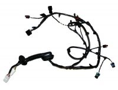
Out of stock*TAKEOFF* 1999 - 2002 Dodge Viper Left Door Wiring Harness - 04763075AE
Part # 04763075AE
$250.00

*USED*1996 - 1997 Dodge Viper Fuel Tank - 04709500 USED TAKE OUT
$349.00
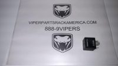
Out of stock006: 96-02 Viper Fuel Pump Relay, USED* 4848193
Part # 04848193
$80.00

009: 1997 - 2002 Dodge Viper Lower Left Front Control Arm - 04709297
$349.00
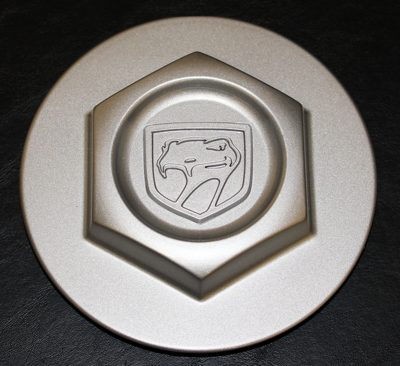
1992 - 1994 Dodge Viper RT/10 Wheel Center Cap - 04643136
$125.00
 Out of stock
Out of stock1992 - 1995 Dodge Viper RT/10 Left Door Panel Trim With Bezel & Cup - 0HY61MXD
Part # 0HY61MXD
$500.00
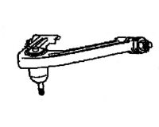
1992 - 1995 Dodge Viper RT/10 Left Front Upper Control Arm - 05073475AA
Part # 05073475AA 04642077
$250.00

1992 - 1995 Dodge Viper RT/10 Right Front Upper Control Arm - 05073474AA
Part # 05073474AA 0462076
$549.00

1992 - 1995 Dodge Viper RT10 Ignition Coil 4-pin 04643178
$259.99

1992 - 1995 Dodge Viper RT10 Ignition Coil 6-pin 04643177
$155.00
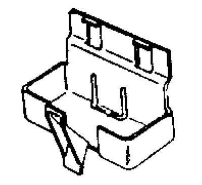
1992 - 1996 Dodge Viper Fuse Block Cover - 04643775
Part # 04643775
$22.00
 Out of stock
Out of stock1992 - 1996 Dodge Viper RT/10 Alternator Assembly - 4642031
Part # 4642031
$249.99

1992 - 1996 Dodge Viper RT/10 Positive Battery Cable Harness - 04642603
Part # 04642603
$100.00
 Out of stock
Out of stock1992 - 1996 Dodge Viper RT/10 Quartz Lower Right Dash Fascia Bolster - 0MJ80RD5
Part # 0MJ80RD5
$110.00
 Out of stock
Out of stock1992 - 1996 Dodge Viper RT/10 Throttle Body - 05245241
Part # 5245241
$195.00
 Out of stock
Out of stock1992 - 1996 Dodge Viper RT/10 Windshield Washer Fluid Reservoir - 04643159
Part # 4643159
$85.00
 Out of stock
Out of stock1992 - 1998 Dodge Viper Right Exterior Mirror - 04709432 WHITE
Part # 04709432
$95.00

1992 - 2002 Dodge Viper Fuel Filter - 04708317
Part # 4708317
$59.00
 Out of stock
Out of stock1992 - 2002 Dodge Viper Fuel Filter - 33325VP 04708317
Part # 33325 04708317
$43.50

1992 - 2002 Dodge Viper Hood Silencer Pad - DISCONTINUED
$999.99
 Out of stock
Out of stock1992 - 2002 Dodge Viper Left Interior Sill Cover - 0KS21DX9AC
Part # 0ks21dx9ac
$95.00
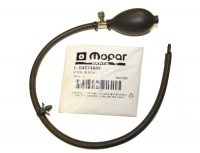
Out of stock1992 - 2002 Dodge Viper Lumbar Support Inflation Bulb - 4874889
Part # 4874889
$150.00

1992 - 2002 Dodge Viper OEM Vented Rear Brake Rotor - 04642353
$100.00

1992 - 2002 Dodge Viper Right Interior Sill Cover - 0KS20DX9AC
$60.00
 Out of stock
Out of stock1992 - 2002 Dodge Viper Scissor Jack W/WRENCH AND BAG 04695774AC
Part # 04695774AC
$175.00
 Out of stock
Out of stock1992 - 2002 Dodge Viper Toupette Soft Top Bag - 0HC41BX7AB
Part # 0HC41BX7AB
$250.00

1992 - 2006 Dodge Viper Main Bearing .10 Over - 05096022AA
Part # 05096022AA
$80.00

1992 - 2010 Dodge Viper M6 Flat Washer - 06100877
Part # 06100877
$1.00
 Out of stock
Out of stock1992 1993 1994 1995 DODGE VIPER COCKPIT COVER 82202276
Part # 82202276
$350.00
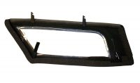
1993 - 1995 Dodge Viper RT/10 Left Window - 0JU73MX9
Part # 0JU73MX9
$395.00
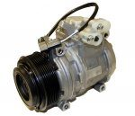
1993 - 1996 Dodge Viper RT/10 Air Conditioning Compressor - 04708198
Part # 04708198
$550.00
 Out of stock
Out of stock1996 - 2002 Dodge Viper Keyless Entry Alarm Module w/Key Fobs - 05015148AC
Part # 5015148AC 4848832AG
$415.00
 Out of stock
Out of stock1996 - 2002 Dodge Viper Lower left Dash Fascia Bolster - 0QN71BX7AC
Part # 0QN71BX7AC
$625.00
 Out of stock
Out of stock1996 - 2002 Dodge Viper Oil Cooler Inlet Line - 04848310
Part # 04848310
$175.00

1996 - 2002 Dodge Viper Oil Pan Gasket - 05037022AA
$289.99
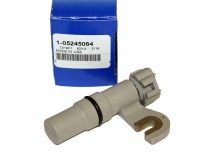
1996 - 2006 Dodge Viper Camshaft Sensor - 05245084 aftermarket
Part # 05245084 PC142
$135.00

1996 - 2006 Dodge Viper NEW Camshaft Sensor - 05245084 *FACTORY*
Part # 05245084 PC142
$999.99

1996 - 2006 Dodge Viper Used Camshaft Sensor - 05245084 used
$85.00
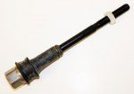
1996 - 2010 Dodge Viper SRT10 Rear Trailing Link - 04763159AC TOE ROD REAR INNER TIE ROD
Part # 04763159AC
$399.00

1996 -( RT/10 Only ) Dodge Viper RT/10 Engine Oil Indicator (Dipstick) *used* 05245899
$20.00
 Out of stock
Out of stock1997 - 1998 Dodge Viper Front Polished Aluminum Wheel - 0QV40SZ2AA
Part # 0QV40SZ2AA
$600.00

1997 - 2002 Dodge Viper RT/10 Right Exterior Stanchion Cover - 0QB96JX8AF
$360.00
 Out of stock
Out of stock1997 - 2002 Viper RT/10 Left Interior B Pillar Trim Panel - 0QB93JX8 DODGE
Part # 0QB93JX8
$175.00

1997-2002 Dodge Viper Engine Oil Indicator TUBE Mopar Part 4763792AC
Part # 4763792AC
$99.00

1998 - 1999 Dodge Viper Fuel Tank - 04848812 *USED* TAKE OUT HIGH QUALITY
$349.00
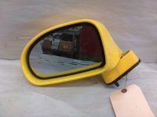
Out of stock1999-2002 Dodge Viper Left, Drivers Side Mirror, YELLOW 04854277ac
Part # 04854277ac
$200.00
 Out of stock
Out of stock2000 - 2010 Dodge Viper 3.55 Rear Gear Set - P5007525
Part # P5007525
$529.99
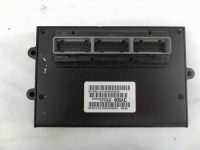
Out of stock2000 DODGE VIPER MODULE, ENGINE CONTROL JTEC 4865406AC
Part # 4865406AC
$950.00
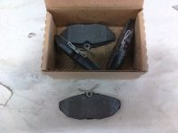
2001 - 2002 Dodge Viper Rear Brake Pad Kit - 05066478AA ABS
Part # 05066478AA
$175.00
 Out of stock
Out of stock2003 - 2006 Dodge Viper SRT10 Fuel Filter - 05290801AB
Part # 05290801AB
$499.00
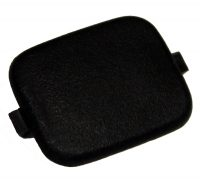
Out of stock2003 - 2010 Dodge Viper SRT10 Door Pull Cup Screw Cover Cap - 0LE82RX9
Part # 0LE82RX9
$9.99
 Out of stock
Out of stock2003 - 2010 Dodge Viper SRT10 Front Fascia to Hood Seal - 05029234AB
Part # 05029234AB
$55.00
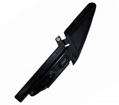
2003 - 2010 Dodge Viper SRT10 Right Side Door Flag - 04865580AF
Part # 04865580AF
$425.00
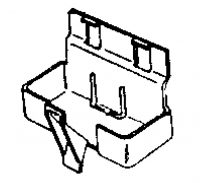
Out of stock2003 - 2010 Dodge Viper Under Hood Fuse Block Cover - 68027689AB
Part # 68027689AB
$22.00

2005 - 2013 Dodge SRT Viper A/C Clamp - 05290366AA
Part # 05290366AA
$9.75

2005 - 2013 Dodge SRT ViperBrake Line Clamp - 05039000AA
Part # 05039000AA
$2.20
 Out of stock
Out of stock2008 - 2010 Viper SRT10 Race Engine Controller - P5155254AB
Part # P5155254AB
$1,375.00
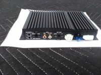
Out of stock92 - 96 VIPER AMLIFIER (AUDIO) 04643022 04709205
Part # 04709205 04643022
$150.00
 Out of stock
Out of stock92-95 VIPER AIR CLEANER ASSY BOX COMPLETE 5245310 5245312 DODGE
Part # 05245312 05245310
$395.00

92-95 VIPER FUEL PUMP REGULATOR REPLACEMENT NEW GEN 1
$595.00
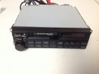
Out of stock92-96 VIPER RT10 STOCK CASSETTE RADIO W/BEZEL 04643021
Part # 04643021
$500.00
 Out of stock
Out of stock94 - 02 DODGE VIPER FUEL LINE 05245792 AT INTAKE MANIFOLD
Part # 05245792
$199.00
 Out of stock
Out of stock96-00 VIPER FRONT BOLT CENTER HUB 04709307
Part # 4709307
$65.00
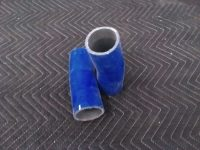
96-02 VIPER FACTORY BLUE SMOOTH TUBES, AIR INTAKE *PAIR* 05245778AB
Part # 05245778AB
$150.00

96-02 VIPER REAR TOE LINK - INNER ONLY - 4709309 52037501 4763159AC
Part # 4709309 52037501 4763159AC
$399.00
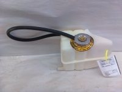
Out of stock97-02 PROWLER OVERFLOW BOTTLE 4815217AD PRESURIZED COOLANT TANK
Part # 4815217AD
$199.99

NEW SRT Viper TR6060 6-Speed Transmission - Updated Gears
Part # 068206482AA
$4,495.00
Out of stock
USED 1997 - 2010 Dodge Viper Door Speaker Grill - 0SL12DX9AA
Part # 0SL12DX9AA
$50.00

009 97-02 DODGE VIPER SOFT TOP TOUPETTE 0PK61SX9AJ
Part # 0PK61SX9AJ
$2,999.00
03-10 VIPER *PAIR*REAR TOE LINK, INNER TIE ROD 4763159AC 4709308 5290168AC
Part # 4763159AC 4709308 5290168AC
$775.00
1992 - 1996 Folding Top Side Rail Kit 5010323AA
Part # 5010323AA
$600.00
1992 - 1998 Dodge Viper Left Outside Mirror - 04709433 BLUE
$169.99
1992 - 1998 Dodge Viper Left Outside Mirror - 04709433 WHITE
$120.00
1992 - 2002 Dodge Viper Lumbar Support Inflation Bulb - 4874889 BULB ONLY
$49.00
1992 1993 1994 1995 DODGE VIPER SOFT TOP PAIR RAIL SET 05010323AA
$1,000.00
1992-1996 Gen1 Dodge Viper Alarm Module - Security Alarm 04686003
$425.00
1994 - 1996 Dodge RAM V-10 Crankshaft Position Sensor - 56041041 53006562
$175.00
1996 - 2000 Dodge Viper Right Front Knuckle - 04709304 4709302
$499.00
1996 - 2002 Dodge Viper RT/10 Back Glass Storage Bag - 0GA75LX7
$76.00
1996 1997 1998 1999 2000 2001 2002 AMPLIFIER 4763070
$250.00
1997 - 2003 Dodge RAM V-10 Crankshaft Position Sensor - 46027864 56027864
$175.00
1997 - 2010 Dodge Viper Door Speaker Grill - 0SL12DX9AA
$90.00
1998 Dodge Viper NEW Engine Control Module - 4854704AD
$999.00
1998-2002 Dodge Viper Passenger Air Bag with Cover (Textured Finish) 0RW19JX8AB
$1,775.00
Out of stock1999-2002 Dodge Viper Left, Drivers Side Mirror, Primered 04854277ac
Part # 04854277ac
$200.00
2002 Dodge Viper NEW OEM Factory Engine Control Module - 5029712AA
$1,575.00
2003 - 2010 Dodge Viper SRT Left Door Grab Handle Polished Mopar Part 0UA37SZ6AA
$150.00
2003 - 2010 Dodge Viper SRT Right Door Grab Handle Polished Mopar Part 0UA36SZ6AA
Part # 0UA36SZ6AA
$50.00
92 - 02 DODGE VIPER LOWER CRANK PULLEY 053010222
$149.00
92 - 95 VIPER FRONT LOWER CONTROL ARM LEFT 04642013
$700.00
92 - 95 VIPER HEAD GASKET 05245157BA
$299.99
92 - 95 VIPER LEFT REAR LOWER CONTROL ARM 04642661
Part # 04642661
$595.00
92 - 95 VIPER LH SIDE DOOR LATCH ASSY 04643035
Part # 04643035
$325.00
92 - 95 VIPER RH REAR KNUCKLE SPINDLE 4643119
$400.00
92 - 95 VIPER RH REAR UPPER CONTROL ARM 04642662
Part # 04642662
$500.00
92 - 95 VIPER RIGHT REAR LOWER CONTROL ARM - 04642660
$595.00
92 - 98 VIPER EXHAUST MANIFOLD MOUNT BOLT 06034596
Part # 06034596
$4.50
92 - 98 VIPER GROMMET SPORT CAP PAD 04643927 RT/10
Part # 04643927
$20.00
92 - 98 VIPER SHOULDERED EXHAUST MANIFOLD MOUNT BOLT/STUD 06034658
$25.00
92 -95 VIPER RH FRONT LOWER CONTROL ARM 04642012
$700.00
92 VIPER ENGINE CONTROL MODULE SMEC 4708421
Part # 04708421
$1,575.00
Out of stock92 VIPER WIPER MOTOR 04643064 LH SIDE DODGE
Part # 04643064
$350.00
92,93 EARLY VIPER HOOD RELEASE HANDLE & TWIN CABLES 4642966 DODGE RT/10
Part # 4642966
$249.00
Out of stock92-02 VIPER FRONT REINFORCER BAR BUMPER 4708345 FIBERGLASS
Part # 04708345 04763098
$895.00
92-02 VIPER HOOD GUIDE, MOUNT, RH PASSENGER SIDE UPPER COWL MOUNT 04643269
Part # 04643269
$60.00
92-02 VIPER HOOD MOUNT, UPPER, LEFT, COWL MOUNTED 04643268
Part # 04643268
$69.00
Out of stock92-95 VIPER BLACK OEM FACTORY STEERING WHEEL, BARE NEW! 04642736
Part # 04642736
$525.00
92-95 VIPER COCKPIT COVER, BLACK VINYL FACTORY SURPLUS
$499.99
92-95 VIPER RED OEM FACTORY STEERING WHEEL, BARE NEW! 04642736
$525.00
Out of stock92-96 Dodge Viper BACK WINDOW 4643978 db8245 RT/10 4709425 DB08788GT back glass rear
Part # 4643978 4709425 db8245 db8788
$995.00
92-96 Steering wheel horn BUTTON.
Part # 04642738
$175.00
92-96 VIPER 320 KPH SPEEDOMETER 04746401 FITS 92-02
$625.00
92-96 VIPER FRONT ENGINE CROSSMEMBER 04642289
$275.00
Out of stock92-96 VIPER RT/10 FUEL INJECTOR 05245344 SET OF 10!
Part # 05245344
$699.00
Out of stock92-96 VIPER RT10 180 MPH SPEEDO 04728733 04642130 FITS 92-02
Part # 04642130 04728733
$625.00
92-96 VIPER RT10 ENGINE HARNESS P04848845
$350.00
93-96 DODGE VIPER RH PASSENGER DOOR PANEL TAN & BLACK 0LC42PKA
$495.00
Out of stock93-96 VIPER DASH BEZEL / FASCIA, BLACK, W/GLOVE BOX DOOR, 0PE85RX4 0PH10RX4AB
Part # 0PE85RX4 0PH10RX4AB
$595.00
94 - 02 Dodge RAM V10 Camshaft Sensor - 56027860 AFTERMARKET
$135.00
94-96 VIPER DRIVERS LH DOOR PANEL TA 0JW33MKA
$575.00
94-96 Viper gen 1 engine cooling tube 5245042
$95.00
Out of stock96-02 Dodge Viper Drivers/Left Air bag (textured finish found in 98-02) 0LB45JX8AB
Part # 0LB45JX8AB
$2,100.00
Out of stock96-02 VIPER GTS SPARE TIRE COVER, BLACK CARPETED, 0LB98SX9AB
Part # 0LB98SX9AB
$175.00
96-02 VIPER OIL COOLER LINE 4848300
$175.00
96-02 VIPER RH LOWER FRONT CONTROL ARM 04709296
Part # 04709296
$395.00
96-98 VIPER 200 MPH SPEEDO 04763850AB FITS 92-02
$525.00
96-98 VIPER 360 KPH SPEEDO 04763853AB FITS 92-02
$625.00
97-02 Dodge Viper RT/10 Hardware Cover for Convertable 04848902AA
Part # 04848902AA
$7.75
97-02 VIPER SPEAKER (DOOR MOUNT) 04763072AB
$35.00
98 - 02 VIPER EXHAUST MANIFOLD RH PASSENGER SIDE, TUBE STYLE 04848342
$400.00
98 VIPER GT2 BLUE CENTER CONSOLE OPF251XB, 96-02
$499.99
VIPER STOCK Ring Gear Set 3.07
Part # 5093384aa
$450.00